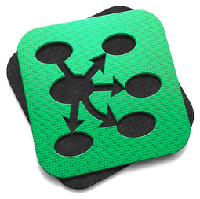

Kit Richert
EDUCATION
MA / PhD
University of California, Berkeley
Education / School Psychology, December 2007
Berkeley, CA
BS
Tufts University
Clinical Psychology, Child Development (Minor), Cum Laude, May 2000
Medford, MA
Certificates
Cooper U / Interaction Design Practicum, 2011
General Assembly / Front-End Web Development, 2012
EXPERIENCE
UniversityNow - offering affordable online education
User Experience Designer, 2011-12
San Francisco, CA
Led the redesign of the new.edu online learning platform using a persona-driven design process. Collaborated with academic and technical teams. Developed scenarios, flows, and wireframes. Conducted user research and usability tests. Design projects included all faculty tools, lesson navigation, assessment flows, project submission, and tools to offer students continuous feedback about their learning.
Kitsulting - an educational design consultancy
Principal Consultant, 2009 - Present
San Francisco, CA
Provided research, strategy, and UX design services to e-learning and new media companies, including:
LearnStreet - a "learn to code" platform
Contract User Experience Designer, 2012 - Present
- Created user personas + onboarding scenarios
- Worked on wireframes for the redesign of the marketing site
- Offered recommendations for the redesign of the learning environment
Industrial Logic - an e-learning and training company (agile and lean programming methods)
Contract User Researcher, 2010- Present
- Conducted a baseline analysis of e-learner engagement and progress metrics
- Researched best practices in organizational implementation of ‘pure’ e-learning
- Resigned split-test experiments to evaluate varied learner engagement strategies
- Collaborated with Digital Telepathy on the redesign of the corporate website to improve branding
Nukotoys - an interactive game and toy company
Contract Educational Experience Designer, 2010-11
Collaborated with 3D game designers on Mission to Planet 429, an educational media property for 2nd-3rd graders.
- Worked to redesign children's game-world encounters with informational text and simple machines science concepts
- Used educational research to inform design. Delivered wireframes, flows, and reward structures. Led usability tests
Familian&1 - a digital design firm
Contract Educational Experience Designer, 2010-11
Conducted user interviews and secondary market research (publication review) to assess the opportunity for a new social-media enabled device in the scuba equipment market
- Synthesized market research, academic literature, and primary user research into product recommendations
- Wrote detailed specs and a community development strategy for a new social platform for scuba divers
Howard Rheingold - author and futurist
Cognitive Science Researcher, 2010-11
Produced a 60+ page literature review to support the author's writing of the book, Net Smart: How to Thrive Online
- Researched current findings in the cognitive neuroscience of attention
- Summarized over 200 articles and opinion pieces about multitasking and divided attention in the digital age
Affinity Labs / Monster Worldwide
Associate Producer / Editor, 2007-2009
San Francisco, CA
Managed several Monster communities (SalesHQ.com, TheApple.com, and Tickle.com). Oversaw newsletter marketing, traffic analytics, and created partnerships with over one dozen bloggers.
Stanford Univeristy, Early Life Stress Research Program
Graduate Student Researcher, 2002-2007
Stanford, CA
Worked with the Stanford Early Life Stress Research Program and Stanford Psychiatry Neuroimaging Laboratory on a project examining brain development in children with a history of trauma. Processed and analyzed neuroimaging data and biological samples.
San Ramon Valley Unified School District
School Psychologist, 2005-07
San Ramon, CA
Used systematic methods (cognitive testing, interviews, review of records, and classroom observations) to evaluate students suspected of having a learning disability and determine their eligibility for special education services. Led meetings to develop behavioral intervention plans with parents and staff.
INTERESTS
Game-based learning. My work with Nukotoys, included a deep review of the ‘serious games’ movement. There is great potential for learning within immersive game-worlds!
Product Development. I love to build things, and to work on teams to bring product ideas to life. The early stages of concept development, user research and prototyping are particularly interesting to me.
Creative Communities. San Francisco’s entrepreneurial and artistic communities continue to inspire me.
Making Movies. My brother is an independent film maker, and for the last year I've helped produce his short film, No One But Lydia.. It was one of the most fun, collaborative projects that I've ever worked on.
ADDITIONAL
Stanford Persuasive Technology Lab
Collaborated with BJ Fogg's Persuasive Technology Laboratory on a campaign to “measure peace.” Recruited businesses to participate. Peace.Stanford.edu
Seesaw SF
Served on the Board of Advisors for a local business that offers a kid-friendly cafe and social skills workshops for children. SeesawSF.com
Publications
Richert KA (2007) Pediatric posttraumatic stress disorder and the development of the prefrontal cortex. ProQuest Dissertations & Theses, 69(3), 2001. (UMI No. 3306310)
Richert KA, Carrion VC, Karchemskiy A, & Reiss AL (2006). Regional differences of the prefrontal cortex in pediatric PTSD: An MRI study, Depression and Anxiety, 23, 17-25.Teaching
Served as a Graduate Student Instructor for Introduction to Psychology (PSYCH 1) at UC Berkeley
Credentials
State of California, School Psychologist Credential (2005-Present)
Sites
As I've learned to code, I've been building websites for friends, relatives, and myself (this site).
- Official Site for My Name Is Your First Love, a short film by my brother, Rob Richert
- Official Site for Level-X Bootcamps in Santa Monica. This site uses the Tumblr API as a content management system.
SKILLS
Design Tools
Wireframing / Interaction Design
- Omnigraffle
- Keynote
Adobe Creative Suite (CS6)
- Illustrator
- Photoshop
 InDesign
InDesign
Video Editing
- Final Cut Pro v.10
- iMovie
Development
Front-End
 HTML5 (proficient)
HTML5 (proficient) CSS3 (proficient)
CSS3 (proficient) JavaScript (basic)
JavaScript (basic) JQuery (basic)
JQuery (basic)
Tools
Product Development/Management
- Pivotal Tracker
- Jira
- Basecamp
- Trello
- KanBan Pad
- Noteable